Обзор
Браузер ресурсов CRYENGINE предоставляет обзор вашего проекта, позволяя просматривать его содержимое, искать определенные ресурсы, а также импортировать новые ресурсы в FBX формат.
Цель состоит в том, чтобы предоставить пользователям свободу взаимодействовать с содержимым своего проекта на диске исключительно через редактор до такой степени, что обычный проводник больше не понадобится при работе над проектом CRYENGINE. В будущем все функции управления активами будут добавлены в Обозреватель активов.
Более подробную информацию о системе активов движка можно найти на сайте Система активов — создание метаданных.
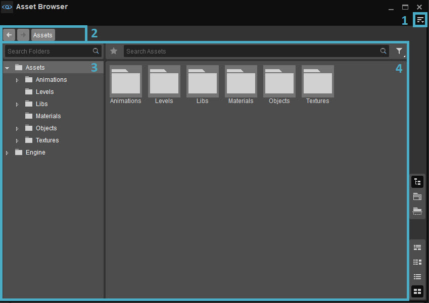
Обзор браузера активов
Некоторые ресурсы по умолчанию, поставляемые вместе с вашей сборкой CRYENGINE, отделены от ресурсов вашего проекта; эти активы по умолчанию расположены под Двигатель папку, а все ресурсы проекта хранятся в папке Активы.
Для программистов
К ресурсам движка можно обращаться, добавляя префикс %ENGINE% к путям к файлам, при этом ICryPak обрабатывает все последующие разрешения путей.
Каждая жестко закодированная ссылка на Двигатель тем временем активы должен используйте этот префикс. Пути без префикса по-прежнему работают по соображениям обратной совместимости, поскольку по умолчанию CryPak Двигатель каталог, когда Активы папка не содержит файлов, соответствующих указанному пути.
Открытие браузера активов
Чтобы иметь возможность использовать и просматривать содержимое существующего проекта в Обозревателе ресурсов, .cryasset файлы необходимо будет сгенерировать, как описано в Система активов — создание метаданных документация.
Доступ к браузеру активов можно получить через Инструменты -> Обозреватель ресурсов.
1. Меню
Доступ через
Файл
Вариант | Описание |
|---|---|
| Новая папка | Создает новую папку внутри папки, выбранной в данный момент в дереве папок. |
Новый актив | С#-скрипт — Создает новый ресурс C# перед открытием Visual Studio или аналогичного текстового редактора, указанного в вашем Sandbox. Предпочтения. Соответствующее окно вывода C# также будет создано, если Sandbox не запускается с ним по умолчанию. Поскольку имена классов C# не могут начинаться с цифры, любой созданный ресурс C# Script с именем «01Class» или аналогичным приведет к ошибке компиляции. Это можно быстро исправить с помощью интерфейса текстового редактора, который открывается при создании ресурса C#; выбранный вами текстовый редактор должен быть указан в Общие → Файл → Текстовый редактор C#. поле ваших предпочтений Sandbox. В текстовом редакторе просто найдите класс public с тем же именем, что и созданный скрипт C#, исправьте имя и сохраните файл, чтобы исправить ошибку. Окружающая среда - Создает новый актив Environment, который определяет параметры окружающей среды текущего уровня, такие как туман, объемные облака и положение солнца в течение 24-часового периода, через Environment Editor (старая версия от 26 февраля). Уровень - Создает новый файл уровня перед открытием диалогового окна «Новый уровень», которое позволяет пользователям указать общие свойства карты высот, текстуры и ландшафта уровня. Материал - Создает новый материальный актив с .mtl расширение в текущей папке. Частицы - Создает новый эффект частиц с помощью .pfx расширение в текущей папке. Сборный дом - А Сборный дом — это тип актива, который содержит один или несколько объектов вместе с их свойствами, из которых можно создать несколько экземпляров, так что каждый экземпляр является точной копией другого. Чтобы создать новый префаб, один или несколько объектов из Level Explorer, которые должны его включать, сначала должны быть выбраны/выделены с помощью Level Explorer. Схематический объект - Создает новый Схема Объект, содержащий графики, переменные, сигналы и конечные автоматы, которые необходимо разместить на уровне. Объект может использовать существующий объект Schematyc в качестве основы, а создание нового объекта автоматически открывает редактор схем. Библиотека схем - Создает новую библиотеку схем и открывает редактор схем; в отличие от сущности, библиотека схем не может быть размещена внутри уровня и содержит функции, перечисления и сигналы. |
Импорт | Открывает файловый менеджер вашей системы для поиска и импорта ресурсов соответствующих типов файлов. Активы также можно импортировать, перетащив их в браузер активов. |
Сохранить все | Когда ресурс изменяется через соответствующий редактор активов, Браузер ресурсов сохраняет все изменения, внесенные в этот актив, даже если редактор ресурсов закрывается без сохранения. Сохранить Все опция сохраняет несохраненные изменения, внесенные во все измененные активы. Активы, которые были изменены, но не сохранены, отмечены звездочкой в Показывает детали и Показывает миниатюры вид. |
| Отменить изменения | Отменяет несохраненные изменения, внесенные в выбранный ресурс. |
| Создать все миниатюры | Создает миниатюры для всех ресурсов, включенных в ваш проект. Это необходимо сделать для всех проектов, созданных до CRYENGINE 5.4. |
| Создать/восстановить все метаданные | Генерирует .cryasset файлы для существующего проекта, чтобы иметь возможность просматривать и использовать его содержимое в Обозревателе ресурсов. См. Система активов — создание метаданных для получения дополнительной информации. Эта опция не работает для активов, расположенных в .pak файлы. |
Редактировать
Вариант | Описание |
|---|---|
Копировать | Копирует выбранный ресурс в буфер обмена. |
Вставить | Вставляет скопированный ресурс из буфера обмена в выбранную папку. Вставить опция доступна только тогда, когда Просмотр → Рекурсивный просмотр неактивен. |
| Переименовать | Позволяет пользователям присваивать выбранному ресурсу собственное имя. |
| Удалить | Удаляет выбранный актив. |
| Дублировать | Создает копию выбранного ресурса в той же папке. |
| Реимпорт | Перезагружает выбранный ресурс в браузер ресурсов. |
| Копировать имя | Копирует имя выбранного ресурса в буфер обмена, чтобы его можно было вставить в другое приложение. |
| Копировать путь | Копирует путь к файлу выбранного ресурса в буфер обмена, чтобы его можно было вставить в другое приложение. |
| Рабочие файлы | Перечисляет все рабочие файлы, связанные с выбранным ресурсом, при этом рабочий файл представляет собой любой тип мультимедийного файла, на основе которого создан ресурс. Кроме того, для каждого рабочего файла в списке предусмотрены следующие параметры:
Дополнительные рабочие файлы можно связать с активом, а ранее связанные файлы можно удалить с помощью Рабочие файлы -> Управление рабочими файлами... опция, в которой также перечислены ранее связанные рабочие файлы. Пожалуйста, обратитесь к Связывание рабочих файлов с активами в разделе «Функциональность» для получения дополнительной информации. |
| Открыть в проводнике | Открывает проводник для поиска выбранного ресурса/папки на диске. |
Посмотреть
Вариант | Описание |
|---|---|
Показывает детали | Отображает несколько свойств актива в столбцах на панели результатов поиска. Показывает детали альтернативно можно переключить с помощью |
Показывает миниатюры | Отображает миниатюры ресурсов вместо подробностей в столбцах на панели «Результаты поиска», которые альтернативно переключаются с помощью кнопки Выбирайте между четырьмя разными размерами миниатюр по h.удерживание левой кнопки мыши более или щелчок правой кнопкой мыши на Показывает миниатюры кнопка. |
Разделить по горизонтали | Отображает свойства ресурса в столбцах и миниатюрах ресурсов в двух горизонтальных разделах панели «Результаты поиска». Выбор ресурса в виде столбца также выделит его на панели миниатюр и наоборот. Также соответствует |
Разделить вертикально | Отображает свойства ресурса в столбцах и миниатюрах ресурсов в двух вертикальных разделах панели «Результаты поиска». Выбор ресурса в виде столбца также выделит его на панели миниатюр и наоборот. Соответствует |
Показать дерево папок | Скрывает/открывает панель дерева папок. Показать дерево папок также можно переключать через |
Рекурсивный просмотр | При активном рекурсивном просмотре ресурсы, включенные как в выбранную папку дерева папок, так и в ее подпапки, отображаются на панели результатов поиска. С другой стороны, при деактивации рекурсивного просмотра отображаются только файлы, включенные в выбранную папку. Альтернативно переключается с помощью |
| Размеры миниатюр | Позволяет пользователям устанавливать размер миниатюр ресурсов/папок, отображаемых в браузере ресурсов, на любое из следующих значений:
|
Адаптивный макет | Когда Адаптивный макет включен, положение панелей инструментов и дерева папок изменяется в зависимости от размера окна браузера ресурсов. |
Панели инструментов
| Вариант | Описание | ||||||||||||||||||||||||
|---|---|---|---|---|---|---|---|---|---|---|---|---|---|---|---|---|---|---|---|---|---|---|---|---|---|
| Настроить | Открывает окно настройки панели инструментов, позволяющее пользователям настраивать существующие панели инструментов и/или создавать новые панели инструментов в браузере ресурсов. | ||||||||||||||||||||||||
| Блокировка панелей инструментов | Если этот параметр отключен, положения панелей инструментов и разделителей в Обозревателе ресурсов можно изменить путем перетаскивания. | ||||||||||||||||||||||||
| Проставки | Следующие параметры позволяют пользователям использовать разделители при позиционировании панелей инструментов.
Проставки Опции меню доступны только тогда, когда Панели инструментов → Заблокировать панели инструментов отключен. | ||||||||||||||||||||||||
| Панели инструментов | Перечисляет все стандартные и пользовательские панели инструментов, созданные для браузера ресурсов, что позволяет пользователям выбирать, какую панель инструментов они хотят скрыть или отобразить. По умолчанию в Обозревателе ресурсов доступны следующие панели инструментов:
|
Если у инструмента есть панель инструментов, будь то панель по умолчанию или пользовательская, приведенные выше параметры также доступны при щелчке правой кнопкой мыши в области панели инструментов (только если панель инструментов уже отображается).
Помощь
| Вариант | Описание |
|---|---|
| Помощь | Открывает пользовательскую документацию для Обозревателя ресурсов. |
2. Панель навигации
Указывает путь к текущей выбранной папке в дереве папок, а также позволяет быстро переключаться между предыдущими/последующими папками по ее пути.
3. Дерево папок
Перечисляет каталог папок и их подпапок, включенных в ваш проект, что позволяет быстро перемещаться между ними. Поиск по папкам Панель вверху также помогает искать определенные папки/подпапки по их именам.
Контекстное меню
Щелчок правой кнопкой мыши в любом месте этой панели открывает контекстное меню со следующими элементами.
| Вариант | Описание |
|---|---|
Новая папка | Создает новую папку в дереве папок. Если папка/подпапка выбрана и щелкнута правой кнопкой мыши в дереве папок, этот параметр создает новую папку в качестве подпапки выбранной папки; однако если выбрана папка «Ресурсы»/без папки, все вновь созданные папки автоматически добавляются в папку «Ресурсы». |
Удалить | Удаляет выбранную в данный момент папку, если это новая/настраиваемая папка, созданная пользователем, из дерева папок. |
Переименовать | Изменяет имя, присвоенное выбранной новой/настраиваемой папке в дереве папок. |
Открыть в проводнике | Находит и отображает содержимое выбранной папки в проводнике вашей системы, только если папка содержит ресурсы и/или другие элементы. |
Создать все миниатюры | Вручную создает миниатюры для всех ресурсов, включенных в текущую выбранную папку дерева папок. |
4. Панель результатов поиска
Содержимое папок, выбранных в дереве папок, ресурсы, полученные в результате поиска, и соответствующие им фильтры поиска отображаются на этой панели результатов поиска.
Миниатюрам ресурсов присваиваются цвета в зависимости от их типа на панели результатов поиска. Они видны только тогда, когда Вид → Показывает миниатюры/Разделить по горизонтали/Разделить по вертикали активен, как показано на изображении ниже.
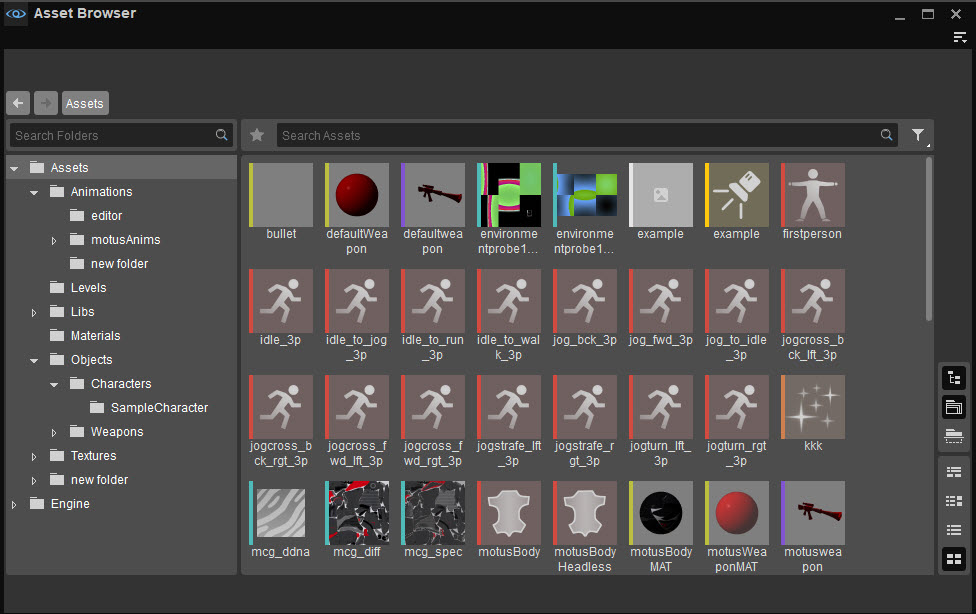
Миниатюры
Цвета и типы активов, которые они обозначают, следующие:
Цвет | Тип актива | Расширение файла |
|---|---|---|
Аудио | .ogg | |
Окружающая среда | .env | |
Уровень | .lyr | |
Материал | .mtl | |
сетка | .cgf | |
Частица | .pfx | |
Сборный дом | .префаб | |
Скелетная анимация | .caf | |
SchematycEntity | .schematyc_ent | |
Скрипт | .lua | |
Текстура | .tif |
Контекстные меню создаются путем щелчка правой кнопкой мыши практически в любом месте панели результатов поиска, и в зависимости от того, где происходят эти щелчки правой кнопкой мыши, меню могут различаться по перечисленным параметрам следующим образом.
Контекстное меню заголовков столбцов
С Посмотреть → Показывает детали/Разделить по горизонтали/Разделить по вертикали Активный список активов отображается в виде столбцов на панели «Результаты поиска», так что каждый заголовок столбца соответствует определенным свойствам отображаемых активов. Щелчок правой кнопкой мыши по столбцу заголовки на этой панели можно включать дополнительные столбцы свойств.
Контекстное меню панели результатов поиска
С Просмотр → Рекурсивный просмотр неактивен, щелкнув правой кнопкой мыши пустое место на панели результатов поиска без выбора какой-либо конкретной доходности актива:
| Вариант | Описание |
|---|---|
Новая папка | Создает новую подпапку в текущей выбранной папке. |
Новый актив | Создает новые ресурсы C# Script, Environment, Level, Material, Prefab, Particles, Schematyc Entity и/или Schematyc Library, а также Файл -> Новый актив вариант Панель меню описано выше. |
Вставить | Вставляет ресурс, который ранее был скопирован с помощью Копировать в его контекстном меню в текущей выбранной папке. Альтернативно этого можно добиться, нажав Ctrl + В. |
Импорт | Открывает проводник вашей системы для поиска и импорта ресурсов соответствующих типов файлов, а также Файл -> Импорт вариант строки меню, описанный выше. |
Открыть в проводнике | Находит и отображает содержимое выбранной папки в системном проводнике, как и Файл -> Показать в проводнике вариант строки меню, описанный выше. |
Создать все миниатюры | Вручную создает миниатюры для всех ресурсов, включенных в текущую выбранную папку дерева папок. |
| Если этот параметр включен, ресурсы, включенные как в выбранную папку дерева папок, так и в ее подпапки, отображаются на панели результатов поиска. С другой стороны, при отключении этой кнопки отображаются только файлы, включенные в выбранную папку. | |
| Отображает несколько свойств актива в столбцах на панели результатов поиска. | |
| Отображает миниатюры ресурсов вместо подробностей в столбцах на панели результатов поиска. | |
Отображает свойства ресурса в столбцах и миниатюрах ресурсов в двух горизонтальных разделах панели «Результаты поиска». Выбор ресурса в виде столбца также выделит его на панели миниатюр и наоборот. | |
Отображает свойства ресурса в столбцах и миниатюрах ресурсов в двух вертикальных разделах панели «Результаты поиска». Выбор ресурса в виде столбца также выделит его на панели миниатюр и наоборот. | |
| Скрывает/открывает панель дерева папок в браузере ресурсов. |
Контекстное меню актива
Создаваемый путем щелчка правой кнопкой мыши по определенному ресурсу на панели «Результаты поиска», его параметры включают в себя:
| Вариант | Описание |
|---|---|
Копировать | Копирует выбранный ресурс, расположенный в папке проекта. Двигатель или Актив каталог в буфер обмена. Копию можно вставить в нужную папку с помощью кнопки Вставить в контекстном меню панели результатов поиска.
Ресурс также можно скопировать в буфер обмена с помощью Ctrl + С. |
Дублировать | Создает дубликат ресурса в той же папке, что и Ctrl + Д. |
Реимпорт | Перезагружает выбранный ресурс в браузер ресурсов. |
Удалить | Удаляет выбранный актив. |
Сохранить все | Когда ресурс изменяется через соответствующий редактор активов, Браузер ресурсов сохраняет все изменения, внесенные в этот актив, даже если редактор ресурсов закрывается без сохранения. Сохранить Все опция сохраняет несохраненные изменения, внесенные во все измененные активы. Активы, которые были изменены, но не сохранены, отмечены звездочкой (*) в Показывает детали и Показывает миниатюры вид. |
| Отменить изменения | Отменяет несохраненные изменения, внесенные в выбранный ресурс. |
Предварительный просмотр актива среды | Позволяет пользователям предварительно просматривать актив среды, временно применяя его настройки, такие как положение солнца, освещение, туман и плотность облаков, к видовому экрану. Эта опция доступна только для ресурсов среды. |
Установить по умолчанию для этого уровня | Устанавливает текущий актив среды в качестве значения по умолчанию для видового экрана. Это означает, что всякий раз, когда окно Environment Editor не находится в фокусе, область просмотра будет отражать настройки среды, указанные текущим активом. Эта опция доступна только для ресурсов среды. Параметры среды, заданные активом среды, также можно сделать стандартными для видового экрана, перетащив актив из браузера ресурсов в видовой экран. Это также добавит актив в список предустановок среды уровня в Настройки уровня инструмент. |
Создать экземпляр | Создает файл экземпляра вещества (.crysub) из архива веществ (.sbsar). Опция открывает Создать предустановку графика вещества окно, которое позволяет пользователям указать местоположение, разрешение и выходные данные для желаемого экземпляра вещества. Эта опция доступна только для Substance Archives; пожалуйста, обратитесь к документации по Вещество инструмент для получения дополнительной информации об архивах и экземплярах веществ. |
Восстановить все экземпляры | Восстанавливает все экземпляры Substance и файлы текстур, созданные из текущего выбранного архива Substance. Эта опция доступна только для Substance Archives; пожалуйста, обратитесь к документации по Вещество инструмент для получения дополнительной информации об архивах и экземплярах веществ. |
Восстановить экземпляр | Восстанавливает текущий выбранный экземпляр вещества. Эта опция доступна только для экземпляров вещества; пожалуйста, обратитесь к документации по Вещество инструмент для получения дополнительной информации об экземплярах веществ. |
Родитель (экземпляр вещества) |
Эта опция доступна только для текстур на основе Substance, созданных из экземпляров Substance; пожалуйста, обратитесь к документации по Вещество инструмент для получения дополнительной информации об архивах и экземплярах веществ. |
Рабочие файлы | Перечисляет все рабочие файлы, связанные с выбранным активом; рабочий файл — это любой тип мультимедийного файла, на основе которого разработан ресурс. Кроме того, для каждого рабочего файла в списке предусмотрены следующие параметры:
Дополнительные рабочие файлы можно связать с активом, а ранее связанные файлы можно удалить с помощью Рабочие файлы → Управление рабочими файлами... опция, в которой также перечислены ранее связанные рабочие файлы. Пожалуйста, обратитесь к Связывание рабочих файлов с активами в разделе «Функциональность» для получения дополнительной информации. |
Переименовать | Позволяет пользователям предоставлять собственное имя созданным копиям или дубликатам ресурса. |
Открыть в проводнике | Находит выбранную копию или дубликат ресурса на диске. |
Показать активы, которые используют | Применяет фильтр зависимостей к панели «Результаты поиска», так что отображаются только те ресурсы, которые используют текущий выбранный ресурс. |
Показать активы, используемые | Применяет фильтр, который извлекает только те активы, которые используются выбранным в данный момент активом. |
Активы |
|
Активы, содержащиеся в GameSDK Пример проекта сжимается и хранится в .pak файлы на диске.
Since archived files cannot be directly modified, users working with GameSDK may find that the Переименовать и Открыть в проводнике options of the Asset Context Menu are unavailable for assets located within the GameSDK assets directory.
Контекстное меню контроля версий
С Система контроля версий setup, the Folder Tree, Search Result Pane and Asset Context Menus might include additional options:
| Вариант | Описание |
|---|---|
Обновить | Manually updates the status of the selected version controlled assets. С View -> Shows Details/Split Horizontally/Split Vertically активный, Статус контроля версий column also serves to reflect the status of all version controlled assets. This column can further be used with search filters described in the Умный и расширенный поиск section below to make search queries specific to the status of these assets. 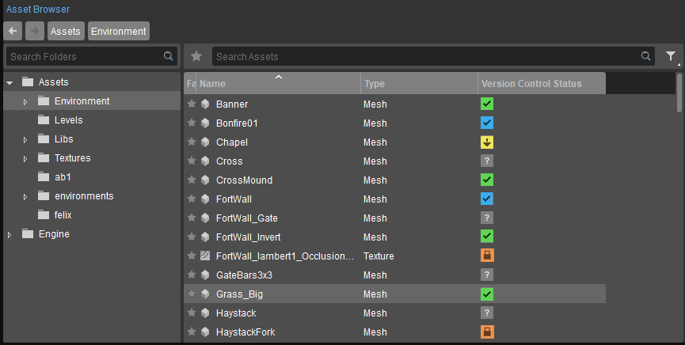 The status of these version controlled assets are also indicated at the top-right corner of their thumbnails when View -> Thumbnails/Split Horizontally/Split Vertically активен. 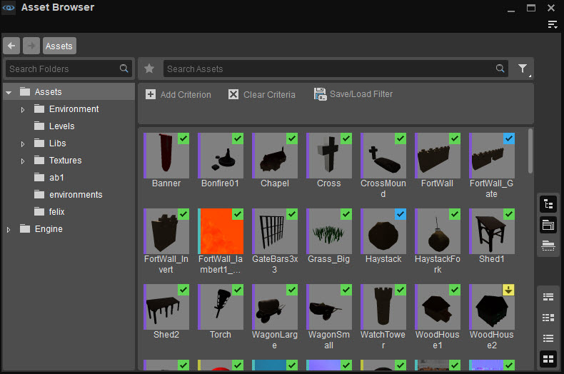 |
Получить последние | Retrieves the most recently modified version of the selected asset file from the repository. |
Выезд | Retrieves an asset file from the repository to be worked upon locally; once Checked Out, a file will no longer be editable by other developers until local modifications have been Submitted or Reverted. |
Вернуть | Discards all changes made to an asset file and restores it to its last local version. |
Вернуть, если не изменилось | Выполняет описанную выше операцию возврата к файлу ресурсов, только если его содержимое не было изменено. |
Отправить... | Фиксирует выбранные локально измененные ресурсы в репозиторий. Отправить... Опция отображает отдельное окно, в котором перечислены все локально измененные ресурсы, рабочие файлы и слои, и позволяет пользователям отмечать, какие изменения они хотели бы зафиксировать (включая сделанные удаления, если таковые имеются). Процесс отправки может быть завершен только после того, как описание выполненных изменений будет введено в текстовое поле в окне «Отправить». 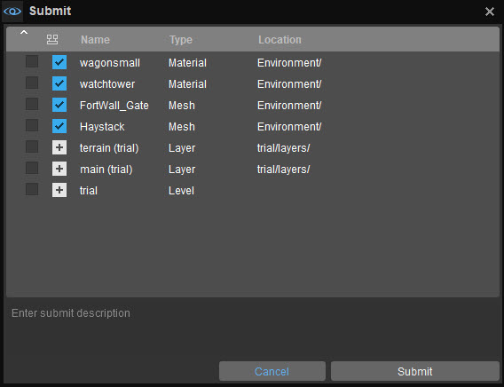 |
Рабочие файлы, связанные с активом, также отслеживаются установленным VCS.
Если VCS настроен правильно, Рабочие файлы Пункт меню, который отображается при щелчке правой кнопкой мыши по активу, будет содержать параметры для выполнения Обновить, получить последнюю версию, оформить заказ, отменить изменения, отменить изменения, если они не были изменены и Отправить... функции для рабочих файлов выбранного актива, как показано ниже.

Рабочие файлы VCS
Кроме того, Рабочие файлы Меню контроля версий также включает в себя возможность Удалить локальные файлы который удаляет копии рабочих файлов актива с контролируемой версией из системы пользователя, не удаляя их из репозитория. Поскольку рабочие файлы могут иметь большой размер, этот параметр особенно полезен для освобождения места в памяти.
Пожалуйста, обратитесь к Связывание рабочих файлов с активами раздел на этой странице для получения дополнительной информации о добавлении рабочих файлов в ресурсы.
Функциональность
Дополнительные функции, предоставляемые браузером ресурсов, включают в себя:
Связывание рабочих файлов с активами
Рабочие файлы — это файлы, используемые при проектировании и разработке актива. Например, материал (.mtl) файл может содержать несколько документов Photoshop (.psd) файлы, файлы TIFF, PNG и/или эталонные изображения JPEG в качестве рабочих файлов.
Рабочие файлы, связанные с любым активом в Обозревателе активов, можно просмотреть в Редакторе при условии, что они связаны с активом из Обозревателя активов.
Добавление рабочих файлов
Чтобы добавить рабочий файл, щелкните правой кнопкой мыши актив в Обозревателе активов и выберите Рабочие файлы → Управление рабочими файлами... опция из контекстного меню. Откроется окно «Управление рабочими файлами», с помощью которого рабочие файлы, расположенные в каталоге ресурсов проекта, можно связать с выбранным активом.
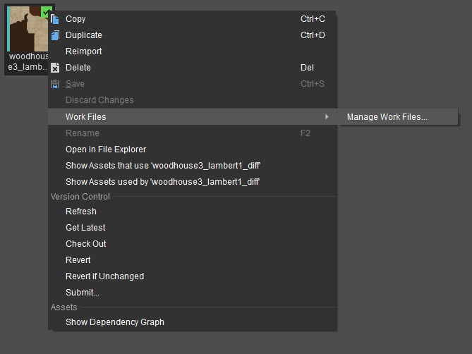
Управление рабочими файлами
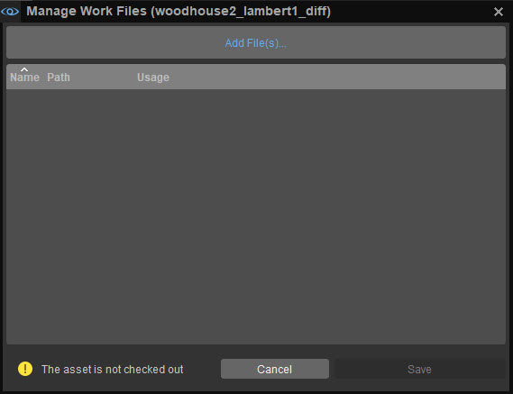
Окно «Управление рабочими файлами»
Нажав на Добавить файлы опция вызывает файловый браузер для поиска и выбора нужных рабочих файлов, нажимая Сохранить подтверждает выбор. В окне «Управление рабочими файлами» представлены следующие столбцы.
Столбец | Описание |
|---|---|
Имя | Указывает имя добавленного рабочего файла. |
Путь | Указывает каталог, в котором хранится добавленный рабочий файл. |
Использование | Указывает количество ресурсов, которые также используют добавленный рабочий файл. |
При использовании контроля версий актив необходимо извлечь, прежде чем с ним можно будет связать рабочие файлы.
Просмотр рабочих файлов
После привязки рабочие файлы, связанные с активом, можно просмотреть/найти, щелкнув правой кнопкой мыши список этого актива в браузере активов и выбрав Рабочие файлы.
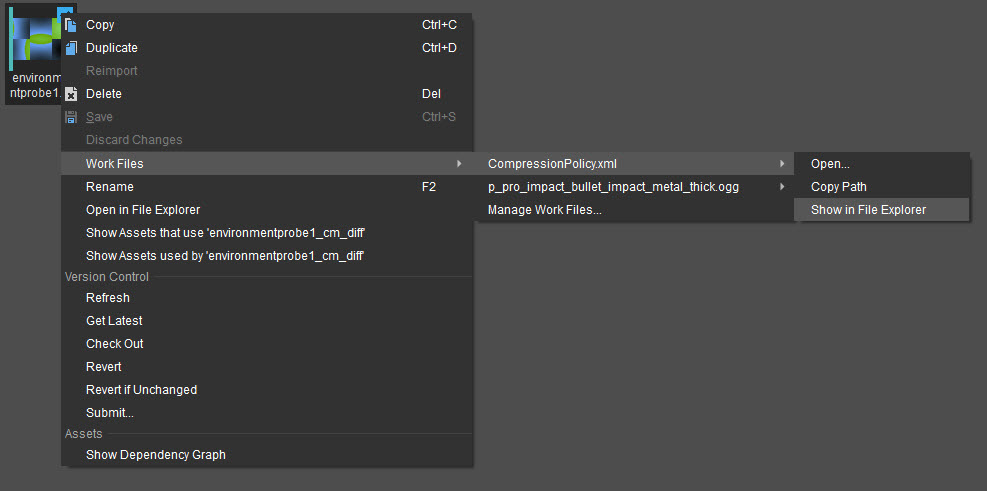
Рабочие файлы
Удаление ассоциаций рабочих файлов
Чтобы удалить связь между активом и конкретным рабочим файлом, щелкните ресурс правой кнопкой мыши в Обозревателе ресурсов и выберите значок Рабочие файлы → Управление рабочими файлами... возможность открыть окно «Управление рабочими файлами».
Наведите курсор на нужный рабочий файл значком мыши, чтобы открыть его.
Хотя файлы практически любого типа могут быть связаны с активом в качестве его рабочих файлов, эти файлы должны располагаться в пределах текущего проекта. Активы каталог.
Копирование и дублирование
Прессование Ctrl + С если один или несколько ресурсов выбраны в Обозревателе ресурсов, копируются эти ресурсы в буфер обмена; эти копии можно вставить в любую папку проекта. Активы каталог с помощью Ctrl + В.
Аналогично нажимая Ctrl + Д при выборе одного или нескольких ресурсов создаются дубликаты этих ресурсов в одной папке. Альтернативно, копии и дубликаты активов также можно создавать с помощью Копировать и Дублировать параметры контекстного меню, создаваемого щелчком правой кнопкой мыши по активу в Обозревателе активов.
- Несмотря на то, что актив, расположенный на территории Двигатель каталог можно скопировать и вставить в папку проекта. Активы каталог, активы не могут быть скопированы или продублированы в местах внутри Двигатель папка. Двигатель По умолчанию папка является неизменяемой, то есть ее содержимое нельзя изменить из браузера ресурсов.
- При активации Просмотр → Рекурсивный просмотр Опция в Обозревателе ресурсов отображает ресурсы, расположенные как в выбранной папке, так и в папках, содержащих ее, на панели «Результаты поиска». Поскольку в этом представлении папка назначения может быть неясной или неоднозначной, копии ресурсов нельзя вставить с помощью Рекурсивный просмотр активный.
- Копирование и дублирование уровня, схематического объекта (.schematyc_ent) и Библиотека схем (.schematyc_lib) типы файлов ресурсов не поддерживаются.
Избранное
Функция «Избранное» дает пользователям возможность создавать закладки и добавлять в список наиболее часто используемые/понравившиеся ресурсы. Актив можно добавить в избранное или удалить из него, переключив значок звездочки напротив его списков, когда Вид → Показать детали/Разделить по горизонтали/Разделить по вертикали активен.
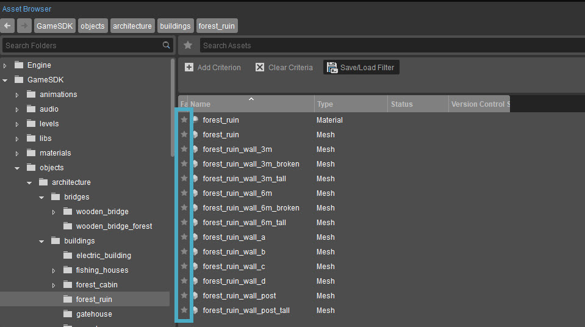
Звездные значки активов
После добавления в список избранного значок звездочки рядом со списком актива отображается заполненным, когда Шоу Детали/Разделить по горизонтали/Разделить по вертикали активен, и в верхнем левом углу его миниатюры, когда Показывает миниатюры/Разделить по горизонтали/Разделить по вертикали активен, как показано здесь.
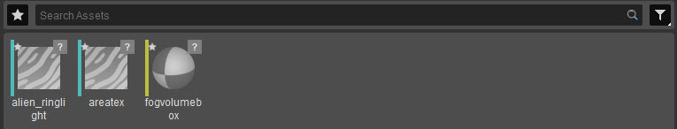
Звездочки на миниатюрах объектов
В любом случае доступ к эксклюзивному списку избранного можно получить, нажав кнопку со звездочкой, расположенную слева от панели «Поиск ресурсов».
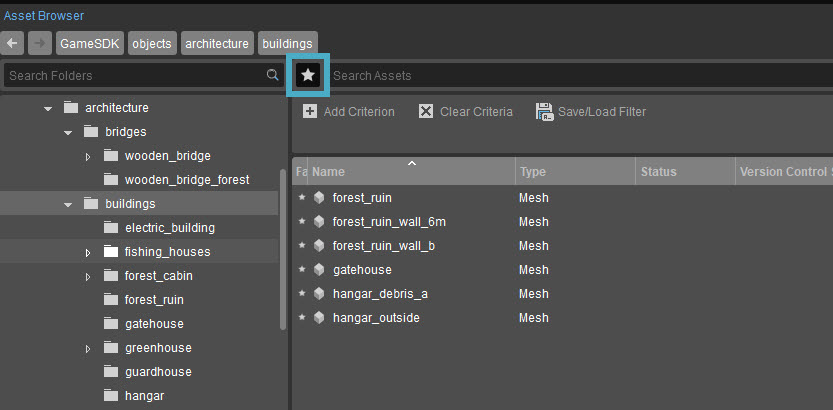
Список избранного
Вместо одновременного отображения полного списка избранных ресурсов в списке избранного отображаются только те, которые включены в выбранную в данный момент папку/подпапку дерева папок.
Умный и расширенный поиск
Панель поиска ресурсов выполняет поиск ресурсов, включенных в каталоги Engine/Assets проекта, путем проверки введенной строки поиска по значениям имени и типа каждого ресурса.
Таким образом, он выдает в своих результатах те активы, имена или типы которых соответствуют введенной строке.
Например, предположим, что текущий репозиторий ресурсов проекта содержит материалы с именем my_leaf, my_trunk и трава соответственно.
Поисковый запрос, содержащий слова материал принесет результаты, включая my_leaf, my_trunk и трава материальные ценности; аналогично поисковый запрос, содержащий слова мой материал будет включать my_leaf и my_trunk активы в своих результатах.
По умолчанию панель «Поиск ресурсов» выполняет поиск ресурсов во всех подпапках, входящих в папку, выбранную в данный момент в дереве папок браузера ресурсов.
Однако пользователи, желающие ограничить результаты поиска только выбранной папкой, могут сделать это, отключив Просмотр -> Рекурсивный просмотр вариант со строкой поиска, введенной на панели «Ресурсы поиска».
Фильтр
Кнопка «Фильтр»
Нажав на Добавить критерий кнопка представляет собой раскрывающееся меню, из которого можно выбрать свойства актива для указания критериев поиска; Поле рядом с этим раскрывающимся списком помогает указать значение свойства, по которому Обозреватель ресурсов должен фильтровать список объектов.
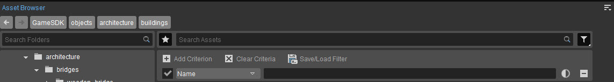
Фильтр объектов поиска
В зависимости от выбранного свойства эти значения, возможно, придется вводить вручную, выбирать из отдельного раскрывающегося списка или, в случае таких свойств, как Зависимости, может потребовать от пользователей физически найти и указать активы, с которыми могут существовать отношения зависимости.
По умолчанию фильтрация дает результаты поиска только в папке, выбранной в данный момент в дереве папок. Активация Просмотр → Рекурсивный просмотр Однако этот параметр позволяет фильтровать результаты из всех подпапок, включенных в текущую папку.
Нажав на
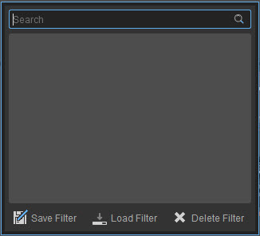
Сохранить/Загрузить/Удалить фильтр
Щелчок правой кнопкой мыши по кнопке фильтра открывает меню, содержащее Четкие критерии вариант и список ранее сохраненных фильтров.
Если в дереве папок выбрано несколько папок, поиск ресурсов с помощью панели поиска будет давать результаты из каждой выбранной папки.
Манипулирование активами
Ресурсы можно включить в уровень, просто перетащив их из панели результатов поиска браузера активов в область просмотра. Это позволяет быстро размещать ресурсы типа сетки и частиц, а также позволяет назначать материальные активы существующим объектам внутри уровня.
Помимо этого активами могут быть:
Отредактировано
Большинство ресурсов можно редактировать, щелкнув double по соответствующим спискам на панели результатов поиска в браузере активов; делая это в среде (.env), Материал (.mtl), GeometryCache (.cax), Частицы (.пфх), CSharpScript (.cs), SchematycEntity (.schematyc_ent) и SchematycLibrary (.schematyc_lib) вызывает соответствующий инструмент редактирования.
С другой стороны, нажатием double на текстуру (.dds), имеющий исходный файл TIFF, открывает настройки компилятора текстур. диалог, где можно настроить такие параметры, как схема сжатия, параметры генерации Mip-карты и комбинации нормальных/альфа-карт файла TIFF.
Обратите внимание, что импортированный ресурс можно редактировать этим методом только в том случае, если доступны его исходные файлы.
Файлы сетки (.cgf), Скелет (.chr), SkinnedMesh (.кожа), AnimatedMesh (.cga), MeshAnimation (.anm), Персонаж (.cdf) и анимация (.caf) типы, однако, можно редактировать только при импорте через FBX импортер. Последующие выпуски движка постепенно позволят редактировать все виды ресурсов с помощью щелчка по double.
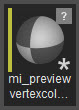
Ресурсы с несохраненными изменениями помечаются значком звездочки в правом нижнем углу их миниатюр и названий.
Удалено
Выделив список актива и нажав клавишу «Удалить». Если между ресурсом и другими ресурсами в вашем проекте существуют зависимости, появится предупреждающее сообщение.
Перемещено
Аналогичный запрос появляется при попытке переместить активы путем перетаскивания их списков в целевую папку в дереве папок.
Импортировано
Активы можно импортировать через Файл -> Импорт опция браузера ресурсов, которая автоматически запускает следующее диалоговое окно для выбора между различными элементами актива, которые необходимо импортировать.
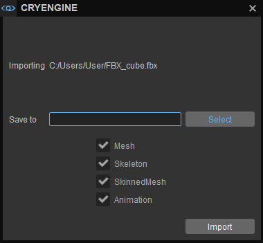
Диалоговое окно «Импорт ресурсов»
Все ресурсы импортируются с настройками по умолчанию, которые можно изменить позже в соответствующем редакторе, как описано ранее. Альтернативно, перетаскивание ресурса из проводника вашей системы в папку назначения в браузере ресурсов также автоматически импортирует элементы, входящие в состав этого актива.
Холдинг Ctrl при этом будет создано приведенное выше диалоговое окно. В любом случае, в следующей таблице перечислены все типы файлов, поддерживаемые импортером.
| Расширение файла ресурса | Производит |
|---|---|
.fbx
| StaticMesh (.cgf), SkinnedMesh (.кожа), Скелет (.chr), SkeletalAnimation (.caf), Материал (.mtl) и CharacterDefinition (.cdf) файлы.
Аламбик (.абв) файлы после того, как следующий компилятор ресурсов выполнит свою работу. 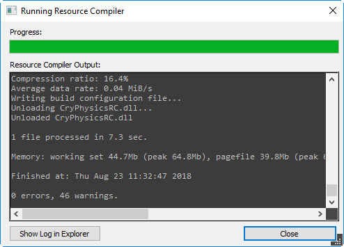 |
.bmp, .bmp2, .bmp3, .icb, .ico, .icon, .j2c, .j2k, .jbg, .jbig, .jng, .jng, jp2, .jpc, .jpe, .jpeg, .jpg, .jpgm, .jps, .jpt, .pipeg, .png, .png00, .png24, .png32, .png64, .png8, .ppm, .psd, .ptif, .svg, .svgz, .tga, .tiff, .tiff64, tif | Текстура (.dds) файлы Если импорт файла текстуры с указанными расширениями файлов не удался, убедитесь, что инструмент ImageMagick существует в Инструменты/сторонние каталог сборки вашего движка. Imagick поставляется в комплекте с движком и использует функцию импорта текстур. |
Несколько ресурсов можно легко перетащить в браузер ресурсов, удерживая нажатой кнопку Сдвиг или Ctrl ключи.
Браузеры ресурсов для конкретных инструментов и мгновенное редактирование
Инструменты Environment Editor, Material Editor и Particle Editor имеют собственные панели обозревателя ресурсов, на которых отображаются только те ресурсы, которые относятся к ним.
Эти браузеры активов, специфичные для инструмента, можно добавить в окна Среды, Материала или Particle Editor, выбрав значок Окно → Панели → Обозреватель ресурсов вариант из их
В браузере ресурсов для конкретного инструмента можно создавать только те ресурсы, которые имеют отношение к инструменту. Более того, хотя функциональные возможности этих браузеров активов, специфичных для конкретных инструментов, такие же, как и у автономного браузера активов, они имеют дополнительную функцию синхронизации выбора, которую можно активировать, щелкнув значок 
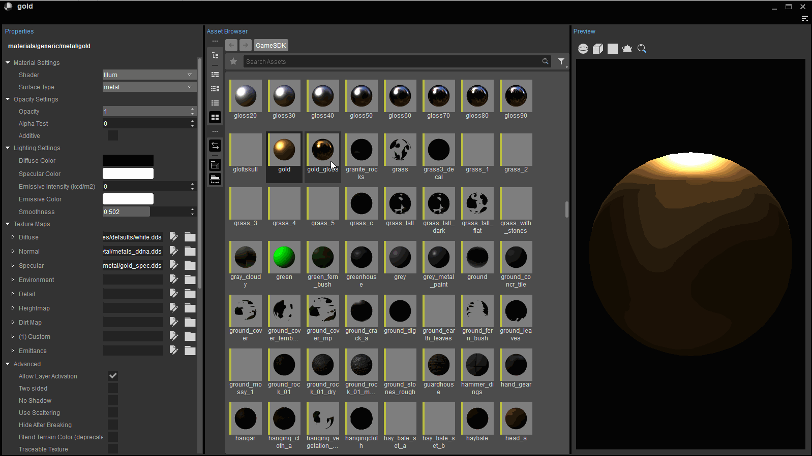
Синхронизировать выбор в браузере ресурсов Material Editor
Когда синхронизированный выбор включен, выбор ресурса в Обозревателе ресурсов среды, материала или Particle Editor немедленно открывает этот актив в редакторе. Тс ним очень легко переключаться между различными ресурсами и редактировать их на лету.
Оперативные обновления для селекторов ресурсов активов
Когда объект на уровне выбран в Level Explorer или в окне просмотра, инструмент «Свойства» отображает множество опций, с помощью которых можно настроить параметры объекта.
Определенные параметры в этом инструменте «Свойства» позволяют выбирать пользовательские файлы (например, типы «Сетка», «Материал» или «Анимация») в отношении актива; это можно сделать, щелкнув селектор ресурсов активов, который отображается в виде кнопки папки рядом с полями опций, как показано ниже.

Живые обновления
Нажатие на инструмент выбора ресурса ресурса автоматически открывает окно «Выбор актива», которое позволяет разместить нужные файлы ресурсов в формате диалогового окна «Обозреватель ресурсов». Любые изменения/выборы, сделанные в этом диалоговом окне, автоматически применяются к выбранному объекту в видовом экране.
Диалоговое окно в стиле Asset Browser можно альтернативно заменить стандартным окном «Открыть файл», установив значение ed_enableAssetPickers, а консольная переменная до 0 через Консоль.
Советы по работе с текстурами
Учитывая список ресурсов текстуры на панели «Результаты поиска», при наведении указателя мыши на текстуру создается обзор ее основных свойств, как показано ниже.
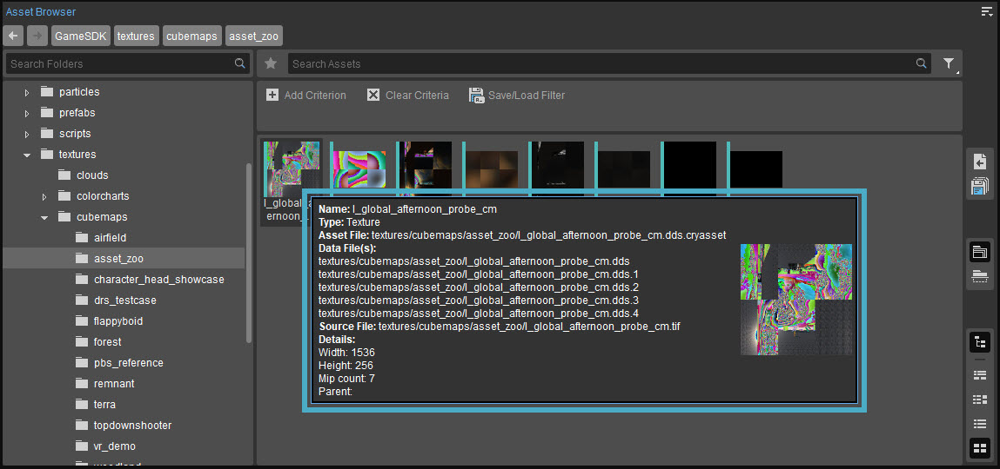
Подсказка по текстуре
Дополнительно проведение CTRL при наведении курсора мыши можно просмотреть увеличенное изображение текстурного актива.
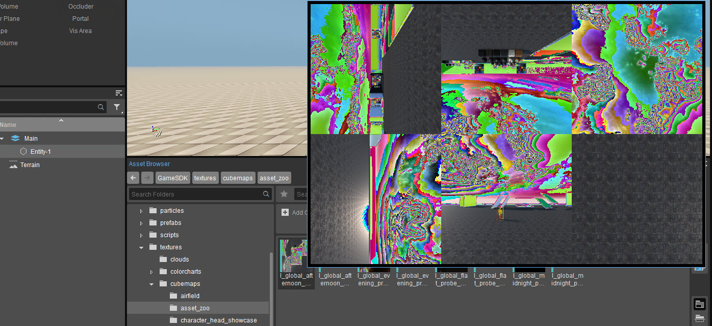
Подсказка по текстуре (большая)